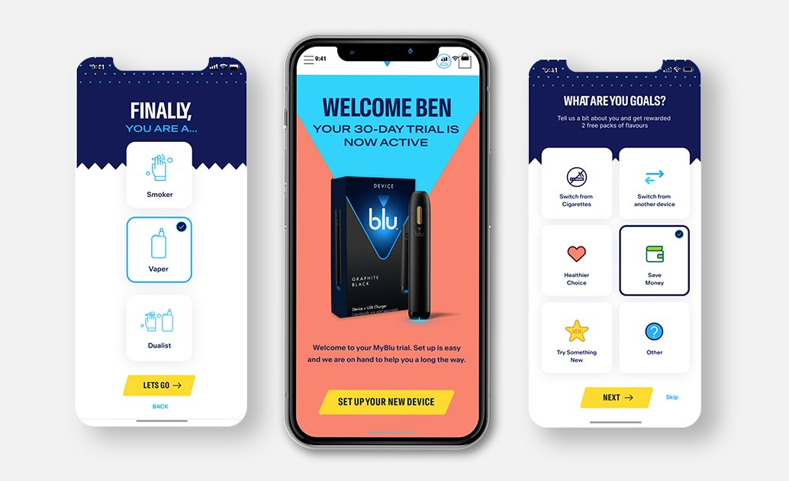

Selected Work


Case Studies
A selection of product work across SaaS, sprint delivery, mobile, and web — each demonstrating measurable, research-led outcomes.
Blue Badge Digital Companion
Streamlining accessibility for 2.5M users. GDS patterns and GOV.UK Design System — cutting incomplete applications by 40%.
Lead Product Designer (UX/UI & Accessibility)
Read Full Case Study →
Harrods Pre-order
Effortless, luxury-grade pre-order experience. Reduced support queries by 85% through data-informed, accessible interaction design.
UI/UX Designer
Read Full Case Study →
SurgeryPrep
Personalised surgical guidance to reduce patient anxiety. WCAG-compliant mobile companion grounded in user research.
UI/UX Designer
Read Full Case Study →

Blu Vape Sprint
Reimagined brand through loyalty and community. 5-day Google Design Sprint from ambiguity to validated direction.
UI/UX Designer & Sprint Facilitator
Read Full Case Study →
Samsung B2B
Repositioning Samsung from vendor to strategic partner. Consultative platform design with WCAG 2.2 AA compliance.
UI/UX Designer
Read Full Case Study →